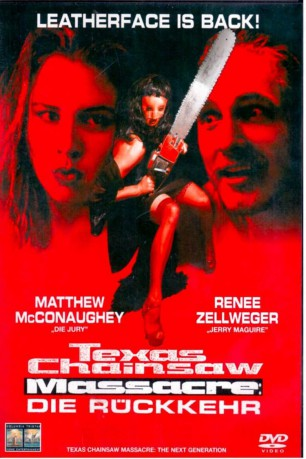
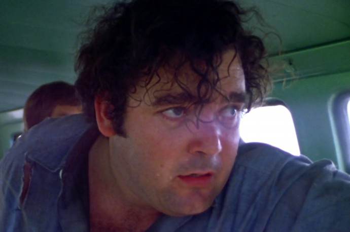

#9920 Texas Chainsaw Massacre: Die Rückkehr
Alternativ: Texas Chainsaw Massacre: The Next Generation (Englischer Titel)
 
 IMDB-Wertung: 3.2 / 10
IMDB-Wertung: 3.2 / 10  Metascore: 50
Metascore: 50 
Eigentlich hätte es Jennys schönster Abend werden können. Doch nachts auf dem Heimweg von ihrer Graduation Party geraten sie, ihr Freund Sean sowie das Pärchen Barry und Heather in eine tödliche Falle. Mitten in einem stockfinsteren Wald werden sie von einem Jeep brutal gerammt – der Fahrer scheint bewusstlos. Auf der Suche nach Hilfe landen drei der Verliebten bei der Sexbombe Darla, die über Telefon Hilfe anfordert. Nur Sean war allein bei dem verunglückten Auto zurückgeblieben. Sein Horror könnte nicht größer sein, als aus dem Abschleppwagen der perverse Sadist Vilmer heraushumpelt. Auch den anderen steht das Grauen noch bevor. Per Anhalter lassen sie sich in ein verfallenes Farmhaus mitnehmen, wo schon Leatherface mit seiner blutverschmierten, ratternden Motorsäge wartet!
Jahr: 1994
Dauer: 87 Minuten
FSK: 18
Land: USA Studio: New Line CinemaTonspuren:
Untertitel: Deutsch,
Auflösung: 1080p (1920x1080) Größe: 10444 MB
Genre: Thriller, Horror, Komödie
Regisseur: Kim Henkel
Drehbuch: Kim Henkel, Tobe Hooper, Kim Henkel
Soundtrack: Wayne Bell, Robert Jacks
Darsteller:
- Renée Zellweger als Jenny
 Matthew McConaughey als Vilmer
Matthew McConaughey als Vilmer- Robert Jacks als Leatherface Slaughter
 Joe Stevens als W.E. Slaughter
Joe Stevens als W.E. Slaughter- John Harrison als Sean
- Tyler Shea Cone als Barry
- David Laurence als Jenny's Stepfather
- Bill Wise als Heckler
- Debra McMichael als Cop at Bud's Pizza
- John Dugan als Cop At Hospital
-  Paul A. Partain als Hospital Orderly
- Marilyn Burns als Patient on Gurney
- Derrick Sanders als Prom Date (uncredited)
- Ryan Wickerham als Prom Guy (uncredited)
- Tonie Perensky als Darla
- Lisa Marie Newmyer als Heather
- James Gale als Mr. Rothman
- Chris Kilgore als Rothman's Chauffeur
- Vince Brock als I'm Not Hurt
- Susan Loughran als Jenny's Mother
- Grayson Victor Schirmacher als Grandfather
- Jeanette Wiggins als Woman Eating Chocolates
- Carmen Nogales als Girl In Red Dress
- Lisa Caraveo als Brenda
- Les Martin als Heckler
- Adam White als Heckler
- Loren Guerra als Bud's Pizza Attendant
- Derek Keele als Cop At Bud's Pizza
- Geri Wolcott als Couple In RV
- Axel L. Schiller als Couple In RV
- Andy Cockrum als Stuffed DPS Officer
- Roger Roe als Stuffed Family
- Angee Hughes als Stuffed Family
- Rebecca Rosenberg als Stuffed Family
Datei: X:\FSK18-Collections\Texas Chainsaw\Texas Chainsaw Massacre Die Rückkehr (1994, FSK18, 1920x1080).mkv seit 08.11.2018
Festplatte: FSK18
 Es gibt insgesamt 9 Filme in der Gruppe 'FSK18-Collections\Texas Chainsaw'
Es gibt insgesamt 9 Filme in der Gruppe 'FSK18-Collections\Texas Chainsaw'